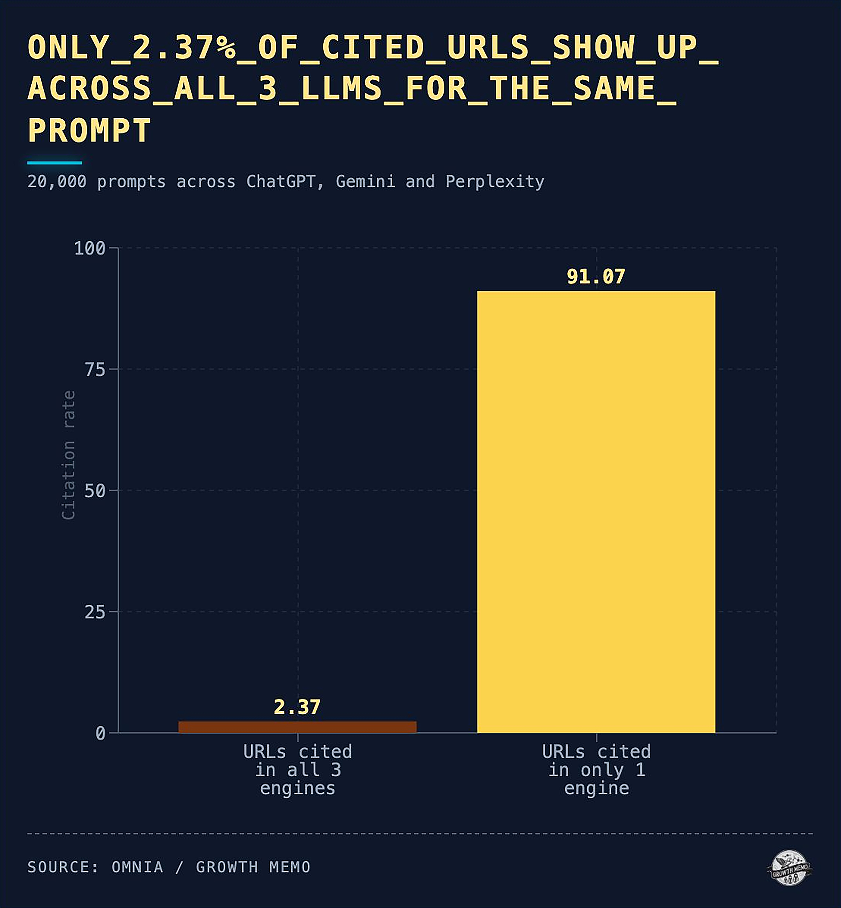

一、核心结论：影响力从流量入口转向被正确引用
媒体和出版网站面对AI搜索时，真正要守住的不是某一个入口位置，而是原创内容被谁理解、怎样署名、以什么上下文出现在答案里。读者可能不再先点击蓝色链接，再进入一篇报道；他们可能先看到AI整理后的摘要，再决定是否追溯来源。
这并不意味着媒体品牌失去价值。相反，可信新闻、深度解释、专业编辑和长期资料库会变得更重要。问题在于，如果AI只吸收了事实碎片，却没有保留媒体名称、作者身份、发布时间、修订记录和原始语境，品牌影响力就会被稀释成匿名知识。
所以，媒体GEO的方向不是把新闻写成机器素材，也不是用技巧逼迫AI引用，而是让原创来源更容易被识别、核验和归因。保住影响力，靠的是让机器和读者都能看清：这条信息从哪里来，为什么可信，谁为它负责。
二、为什么媒体网站更容易受到AI答案影响

新闻和出版内容天然适合被AI摘要：事实密度高、公共价值强、用户经常只想快速知道结论。天气、财经、政策、科技发布、健康指南、人物资料和历史背景，都可能被AI组合进一段答案。对用户来说这很方便，对媒体来说则带来署名和商业模式压力。
Pew Research Center 对 Google AI summaries 的观察显示，出现AI摘要的搜索结果页，用户点击传统结果链接的比例更低。Reuters Institute 2026 媒体趋势报告也记录了媒体管理者对搜索引荐下滑的担忧。这些资料不能证明每一家媒体都会损失同样流量，但足以说明：只靠搜索点击衡量内容价值已经不够。
媒体还面临更细的风险。AI可能引用了报道事实，却没有提到首发媒体；可能把评论观点写成事实；可能把旧报道当成当前状态；也可能把二次转载站点误认为原始来源。流量下降只是表层，解释权和归因权被削弱，才是更长期的问题。
三、先把品牌实体和作者实体讲清楚
媒体品牌不能只靠首页Logo被识别。AI需要在多个页面看到稳定一致的实体信息：媒体名称、出版主体、编辑方针、覆盖领域、联系方式、版权政策、栏目体系和作者身份。关于页、作者页、栏目页、新闻页脚和版权页，都在帮助系统判断这是不是一个可信出版实体。
作者实体同样重要。很多深度报道、评论、评测和专业指南的价值，来自作者经验、采访过程和编辑审校。作者页应说明真实身份、专业领域、过往作品、社交或机构身份、纠错方式，而不是只放一个头像和几篇文章列表。
栏目也是品牌资产。一个长期更新的政策解释栏目、科技评测栏目、数据新闻栏目或行业研究栏目，本身就是AI可识别的知识来源。栏目页如果只按时间倒序堆文章，AI很难理解它的主题边界；如果能说明栏目定位、编辑标准、重要专题和代表作品，品牌影响力会更稳定。
- 关于页说明出版主体、编辑责任、覆盖领域和纠错渠道。
- 作者页保留专业背景、代表作品、联系方式和利益披露。
- 栏目页说明主题边界、更新频率、编辑标准和专题入口。
- 文章页显示首发时间、更新时间、作者、编辑、来源和版权说明。
四、报道页面要让来源、时间和更新脉络可核验
AI引用媒体内容时，最容易出问题的是时间和语境。一篇突发新闻在发布后两小时、两天、两个月的意义可能完全不同；一篇评论文章表达的是作者判断，不应被当成机构事实；一份榜单或评测如果没有说明测试条件，也容易被AI改写成泛化推荐。
报道页面应尽量把事实层、解释层和观点层标清楚。采访对象是谁，引用来自哪份文件，数据截至哪一天，是否后续更正，是否有利益关系，都不只是给读者看的编辑规范，也是降低AI误读的结构线索。
更新记录尤其值得重视。很多媒体会悄悄改正文稿，但AI和读者更需要知道改了什么。简短的更正说明、版本时间、数据来源更新和旧结论失效提示，能减少旧信息在答案中继续传播。
| 页面类型 | 最容易被AI误读的点 | 建议保留的证据 |
|---|---|---|
| 突发新闻 | 把早期状态当成最终结论 | 发布时间、更新时间、来源、后续进展入口 |
| 深度报道 | 忽略采访范围和证据限制 | 采访对象、文件来源、方法说明、编辑审校 |
| 评论专栏 | 把观点改写成事实 | 作者身份、观点标识、利益披露、反方链接 |
| 评测榜单 | 脱离测试条件做推荐 | 样本、测试日期、评分口径、适用人群 |
| 资料库 | 引用过期数据 | 数据来源、更新周期、历史版本、下载说明 |
五、不要只追求被抓取，也要管理授权与展示边界
媒体网站常把AI引用问题简化成“让不让抓”。现实更复杂：搜索索引、摘要片段、AI功能展示、模型训练、实时检索、商业授权和付费墙，是不同层面的控制问题。全开放可能带来归因和变现压力，全封闭又可能削弱发现能力。
Google Search Central 提供了 robots meta、data-nosnippet、X-Robots-Tag、nosnippet、max-snippet 等控制方式，用于管理索引和片段展示。它们可以帮助出版方调整内容在搜索结果和部分AI搜索功能中的呈现，但不能替代版权策略、授权谈判和产品设计。
更成熟的做法是分层处理。公共服务信息、解释器、索引页和摘要页可以适度开放，以便被发现和正确引用；独家调查、付费专栏、数据库和深度档案，可以通过会员、授权或API方式管理访问。关键不是一刀切，而是让每类内容都有清楚的商业和技术边界。
六、把栏目资产做成可复用知识库
媒体最有长期价值的资产，往往不是单篇爆款，而是持续更新的解释能力。AI需要稳定知识来源时，会更容易使用结构清楚、主题明确、更新持续的页面。专题页、时间线、人物档案、术语库、数据页、FAQ和更正页，都可以把分散报道沉淀成知识库。
这对出版网站尤其重要。图书、期刊、研究报告、课程和行业手册，常常拥有比普通博客更强的编辑体系，却在网页表达上过于零散。把目录、作者、版本、摘要、引用格式、购买或访问方式写清楚，能让AI在回答专业问题时更容易识别原始出版物。
知识库化不等于把所有内容切成短段。长篇报道仍然需要叙事和完整语境，但页面可以增加可抽取的辅助结构：要点摘要、时间线、人物关系、数据说明、术语解释和原始资料链接。这样既不牺牲人类阅读，也能让AI减少误拼接。
| 资产类型 | 适合沉淀的内容 | 对品牌影响力的作用 |
|---|---|---|
| 专题页 | 长期议题、系列报道、重大事件 | 让品牌成为某个议题的稳定来源 |
| 解释器 | 政策、科技、财经、医学等复杂主题 | 帮助AI和读者引用准确背景 |
| 作者档案 | 专业记者、评论员、研究员作品 | 强化经验、专业性和责任归属 |
| 数据页 | 表格、图表、指标、历史版本 | 提高事实复用和来源追溯能力 |
| 更正页 | 勘误、更新、撤稿和解释 | 维护长期可信度 |
七、监测AI引用时看署名、上下文和错误归因
媒体做AI引用监测，不应只问“有没有出现链接”。更重要的是看AI有没有正确说出媒体名称、作者、栏目、发布时间、原始报道身份和引用语境。被提到但被错引，有时比没被提到更危险，因为错误会带着品牌名继续扩散。
监测可以按议题和内容类型抽样：重大报道、常青解释、数据页、评测榜单、作者观点、付费内容摘要。每次记录AI答案里的来源、引用链接、是否首发、事实是否准确、是否遗漏关键限制、是否把转载当原始来源。人工复核不可省，因为AI答案的细微语气常常决定品牌是被尊重还是被稀释。
复核结果要回到编辑和产品流程。若AI总是引用转载站，可能需要强化原文结构和canonical关系；若AI总是漏掉作者，可能要改作者页和文章页署名；若AI把旧数据当新数据，就要增加更新提示和历史版本。影响力不是一次测试出来的，而是在持续纠偏中保住的。
- 记录AI是否提到媒体品牌、作者、栏目和原始链接。
- 检查答案是否保留发布时间、更新状态和适用范围。
- 标注转载误归因、观点事实混淆、旧数据复用等风险。
- 把复核结论反馈给编辑规范、页面模板和授权策略。
从编辑制度到商业制度要连起来
AI引用治理最终会落到组织协作。编辑部负责事实、署名和更正，产品团队负责页面结构和会员访问，商业团队负责授权、合作和广告权益，法务团队负责版权边界。任何一端缺位，都可能让好内容在AI答案里变成无法追溯的公共片段。
媒体可以先选十到二十篇代表内容做试点：包括突发新闻、深度报道、解释器、数据页和付费栏目。逐篇检查AI是否能找到原始来源、是否保留作者、是否误用旧版本，再把共性问题沉淀为页面模板和编辑规范。
参考文献
- Pew Research Center：Do people click on links in Google AI summaries?，https://www.pewresearch.org/short-reads/2025/07/22/google-users-are-less-likely-to-click-on-links-when-an-ai-summary-appears-in-the-results/
- Reuters Institute：Journalism, media, and technology trends and predictions 2026，https://reutersinstitute.politics.ox.ac.uk/journalism-media-and-technology-trends-and-predictions-2026
- Google Search Central：AI features and your website，https://developers.google.com/search/docs/appearance/ai-features
- Google Search Central：Robots meta tag, data-nosnippet, and X-Robots-Tag specifications，https://developers.google.com/search/docs/crawling-indexing/robots-meta-tag
- Microsoft Learn：RAG and Generative AI in Azure AI Search，https://learn.microsoft.com/en-us/azure/search/retrieval-augmented-generation-overview
FAQ
Q1：媒体网站是不是应该阻止所有AI抓取？
不一定。阻止抓取可能保护部分内容，但也可能降低发现和引用机会。更稳妥的是按内容价值分层：公共解释、索引页和摘要页适度开放，独家调查、付费数据库和深度档案设置更清楚的访问、授权和展示边界，并定期检查这些设置是否影响正常搜索收录。
Q2：AI引用没有带来点击，还有价值吗？
有价值，但要看引用质量。正确署名、准确归因和保留上下文，可以强化品牌在某个议题上的权威感；错误归因或匿名改写则会削弱价值。媒体应同时看点击、品牌提及、原始来源追溯和会员转化，并区分普通曝光和真正能带来信任的引用。
Q3：作者页对AI引用有什么帮助？
作者页能帮助AI和读者判断内容背后的经验与责任。专业背景、代表作品、采访领域、联系方式和利益披露，会让评论、评测、调查和指南更容易被识别为有来源的作品，而不是匿名网页片段。对专业栏目来说，作者实体也是长期影响力的一部分。
Q4：新闻报道要不要写成更短的AI摘要？
不应牺牲报道完整性。可以增加要点、时间线、来源说明和更新记录，帮助AI抽取关键信息；但长篇叙事、采访细节和证据链仍然是媒体价值所在。好的结构是辅助理解，不是把报道压成素材卡片，也不应把复杂事实改成过度简化的结论。
Q5：付费墙会不会让媒体在AI搜索中消失？
可能影响可见性，但不必只有全开和全关两种选择。出版方可以开放标题、摘要、作者、目录、引用格式和部分解释性页面，同时把完整内容放在订阅或授权体系内。关键是让外部知道内容存在，并能正确识别来源，同时保留商业化空间。
Q6：媒体如何发现AI错误归因？
可以按重点议题和代表文章建立抽样问题，定期查看AI答案是否引用原始来源、是否误用转载页、是否漏掉作者和发布时间。发现问题后，应回查页面结构、canonical、转载协议、作者页和专题页是否给出足够清楚的来源线索，并把高风险错误优先修正。
Q7：出版机构的书籍和报告也需要GEO吗？
需要，尤其是专业书、研究报告、白皮书和课程资料。它们应有稳定页面，说明书名、作者、版本、摘要、目录、引用方式、购买或访问渠道。这样AI在回答专业问题时，更容易把出版物识别为原始知识来源，而不是只引用二次解读内容。